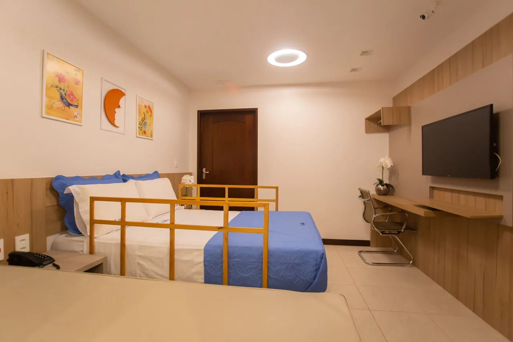
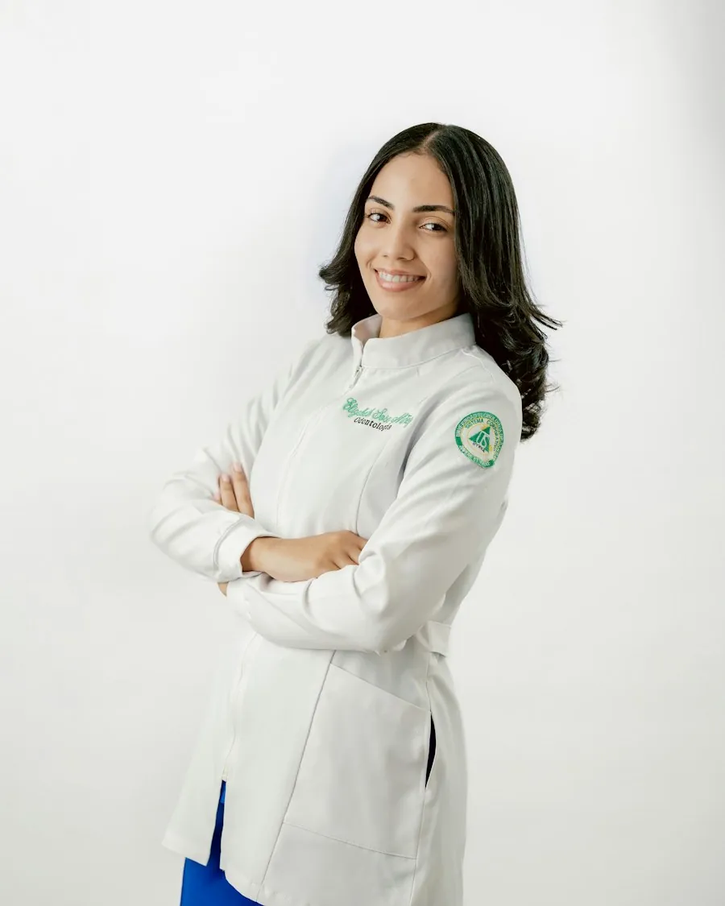
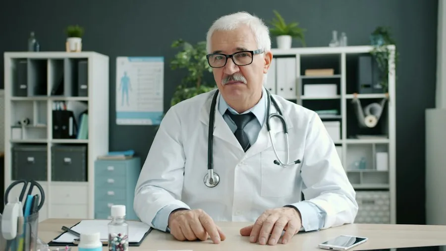

01
Medicina do Sono
Avaliação e acompanhamento dos distúrbios relacionados ao sono.
Consultas, exames e acompanhamento especializado em um espaço preparado para acolher você.
Clínica Somnus · São Luís, MAEspecialidades apresentadas pela Clínica Somnus em seu site atual.
Avaliação e acompanhamento dos distúrbios relacionados ao sono.
Acompanhamento da saúde e do desenvolvimento infantil.
Cuidados relacionados a ouvidos, nariz e garganta.
Avaliação especializada de questões neurológicas na infância.

A clínica informa que conta com equipe interdisciplinar em Medicina do Sono e quartos equipados para exames do sono, com atenção ao conforto e à acessibilidade.
Alguns sinais são comuns, mas não devem ser ignorados.
Conheça exames relacionados para conversar com um especialista. Os links abaixo ajudam a explorar a demo e não indicam qual exame você deve fazer.
Se você se identificou com um ou mais sinais, converse com um especialista. Só uma avaliação médica pode indicar o que está acontecendo e qual o melhor caminho.
Agendar uma consulta ↗Alguns dos exames informados pela clínica. A indicação e o preparo devem ser confirmados com a equipe responsável.
Veja os sinais que merecem atenção ↑Monitoramento de parâmetros do sono para investigação de distúrbios relacionados.
Consultar sobre este exameRegistro da atividade elétrica cerebral, com diferentes modalidades disponíveis.
Consultar sobre este exameRegistro do EEG junto à captação de vídeo, conforme solicitação médica.
Consultar sobre este exameExame diurno usado na avaliação da sonolência.
Consultar sobre este exameAvaliação da capacidade de permanecer acordado em condições controladas.
Consultar sobre este exameIncluindo fotoestimulação, mapeamento cerebral e exame prolongado.
Consultar sobre este exameOs seis perfis, nomes, formações e retratos desta seção são ilustrativos. As informações reais devem ser validadas com a clínica.

Medicina do Sono
Exemplo de atuação em avaliação do sono e acompanhamento de pacientes.
Graduação em Medicina e aperfeiçoamento em Medicina do Sono.
Exemplo visual; dados profissionais a confirmar.Pediatria
Exemplo de perfil para consultas e acompanhamento infantil.
Graduação em Medicina e residência em Pediatria.
Exemplo visual; dados profissionais a confirmar.Otorrinolaringologia
Exemplo de atuação em cuidados de ouvidos, nariz e garganta.
Graduação em Medicina e residência em Otorrinolaringologia.
Exemplo visual; dados profissionais a confirmar.
Neurologia Infantil
Exemplo de perfil para atendimento em neurologia na infância.
Graduação em Medicina e formação complementar em Neurologia Infantil.
Exemplo visual; dados profissionais a confirmar.Medicina do Sono
Exemplo de acompanhamento interdisciplinar para questões do sono.
Graduação em Medicina e aperfeiçoamento em Medicina do Sono.
Exemplo visual; dados profissionais a confirmar.Pediatria
Exemplo de cuidado infantil e orientação às famílias.
Graduação em Medicina e residência em Pediatria.
Exemplo visual; dados profissionais a confirmar.Informações para organizar sua consulta ou exame com tranquilidade.
Falar com a recepção ↗Entre em contato com a recepção pelo WhatsApp (98) 98869-6741 ou ligue para (98) 3302-1190. A equipe confirma a disponibilidade e as informações necessárias para o agendamento.
Consulte a recepção para confirmar convênios, cobertura do procedimento, atendimento particular e valores. Essas condições precisam ser verificadas para a consulta ou exame desejado.
Ao entrar em contato, informe qual exame deseja realizar e pergunte quais documentos e solicitações são necessários. A recepção orientará o seu caso antes do agendamento.
O preparo depende do exame solicitado. Peça à equipe responsável as orientações específicas ao agendar e confirme o que levar no dia do atendimento.
A clínica informa que dispõe de quartos com cama extra para pacientes que necessitam de acompanhamento familiar. Confirme com a recepção as condições para a sua consulta ou exame.
A Somnus fica na Rua dos Ipês, Quadra 50, Casa 06, Jardim Renascença, São Luís – MA. Veja a localização e a rota. Confirme os horários de atendimento e a disponibilidade diretamente com a recepção.
Fale com a recepção para tirar dúvidas sobre consultas, exames e disponibilidade.
Rua dos Ipês, Quadra 50, Casa 06
Jardim Renascença, São Luís – MA
CEP 65075-200
Para confirmar horários de atendimento e orientações antes da visita, fale com a recepção.
(98) 3302-1190
(98) 98869-6741 (WhatsApp)